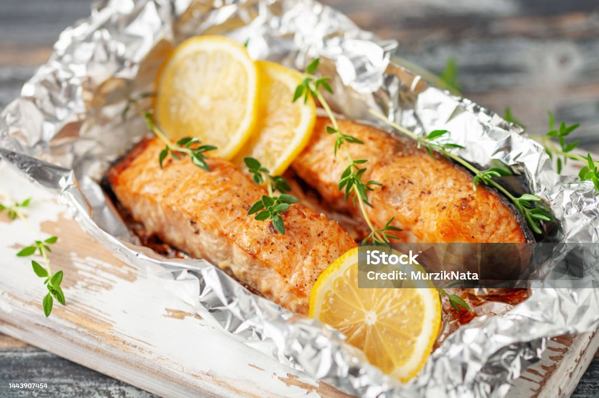

Home
Baked Salmon in Foil

(Photo sourced from iStockPhoto, by photographer MurzikNata.)
Pouch Full of Flavor
A few years ago, I was watching a cooking anime-- 'Todays Menu for the Emiya Family.' (I was on a Fate/ kick at the time, since my friend had gotten me into it, but it's just a fun slice of life show, even if you don't know the original material it's based off.) Baked salmon in tin-foil is one of the first dishes covered in that, and it was the first thing that made me jump up and say, "man, I wanna make that!" Keep in mind, this was still in the days when I hadn't cooked much more than a chicken cutlet.
I think the appeal was in the simplicity. Just stuff all the ingredients in this little pouch, tuck it in like it's going nap-nap, stick it in the oven, and the rest takes care of itself. In reality, there's a little bit more involved, but still, this has been my most-prepared recipe since I first tried it.
The recipe I'm referencing comes from Well Plated, courtesy of Erin Clarke.
Ingredients
- 2lb of salmon, skin on. Usually, for me, these are two seperate 1lb sides, in which case I make two foil pouches.
- ~5 sprigs of fresh rosemary, or fresh herbs of choice. Dried herbs will dehydrate the fish, so I don't recommend them.
- 2 small lemons, sliced. Can substitute lemon juice in a pinch, but I don't know how much. Go with your heart?
- 2 tbsp extra-virgin olive oil
- 1 tsp kosher salt
- 1/4 tsp ground black pepper
- 4 cloves garlic, or 1 tbsp minced.
- Additional fresh herbs, to taste. Gotta be real, I usually don't have these.
Steps
- Before cooking, let salmon stand outside the fridge for ~10m. Preheat oven to 375. Good time to prep other ingredients, set up the foil for the pouches (see below), etc.
- Line a large baking dish, or a rimmed baking sheet, with aluminum foil. Lightly coat with cooking spray, then arrange 2 sprigs rosemary and 1/2 a lemon (thinly sliced) down the center.
- Once the salmon has been out for 10 minutes, place it in the center of the foil, skin side down, on top of the things we've already placed. Drizzle with olive oil, season with salt and pepper, and rub these in until satisfactorily coated. Add the garlic cloves here, scattering evenly over the top. Place the remaining rosemary and slices of the first lemon on top. Take the second lemon, juice it, and pour the juice on top.
- Now to prepare the pouch! Fold up the sides of the foil so that they're covering the fish-- not too tight, but enough to trap in the steam as it cooks. We want there to be just enough room for the air inside to circulate and cook it evenly. If the foil you set out isn't large enough, you can place a second piece on top and fold it under to supplement it.
- Bake for 15-20min; varies based on meat thickness, and whether anything else is cooking at the same time. For thinner slices, might need to check even earlier. Done temp for salmon is officially 145F internal, though apparantly some people like it more rare at 125-130. Regardless, make sure the center is pink. When checking the salmon, be careful of hot steam-- open while ensuring your face and hands aren't directly over the opening!
- When done, open the foil so the salmon is completely exposed, and move the tray to a rack close to the broiler (the top of the oven.) Broil carefully for ~3m, until the garlic is slightly golden and the fish is cooked and crisp. Careful not to burn!
- Remove the salmon and do a final check. If it's still not all the way done at this stage, you can re-seal the pouch and let residual heat do the rest of the work; just be careful not to let this go for too long. Once it flakes easily, it's ready.
- Serve! I like to plate it with the foil as-is, especially if I'm making multiple pouches, but you can cut and serve it as normal, of course. Garnish with more herbs and lemon juice as you see fit.